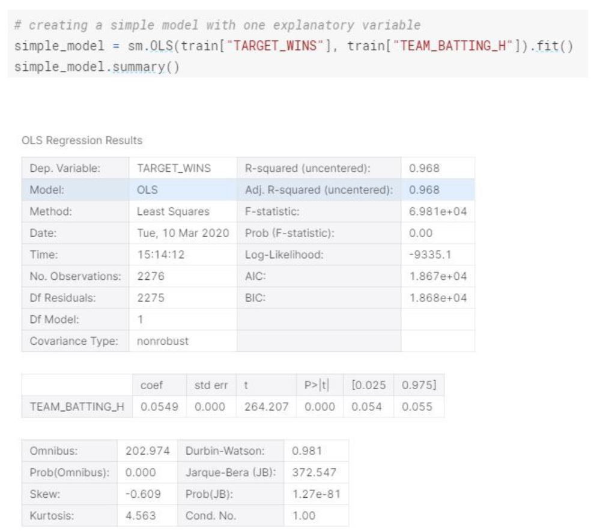

Multiple Linear Regression
Posted on March 10, 2020

Introduction
Summary of Linear Regression Model Development Process.
Introduction
The purpose of this article is to summarize the steps that needs to be taken in order to create multiple Linear Regression model by using basic example data set. Depending on the explanatory and descriptive analysis, many different steps might be included in the process. Hence, the article may not cover certain aspects of linear regression in detail with an example, such as regularization with Ridge, Lasso or Elastic Net or log transformation. Having said that, I will do my best to explain all possible steps from data transformation, exploration to model selection and evaluation. The idea is, when we have a business problem that we can be solved with creating linear regression model, we can reference this article to cover majority of the steps within the process.
The data set that we are going to use is a well known and has been referenced in academic programs for Statistics and Data Science. The most popular reference to this data set comes from the movie “Moneyball”. It provides us the performance of the baseball team for the given year. The problem statement for the analysis is “Can we predict the number of wins for the team with the given attributes of each record of team performance?”
The dataset is provided by Instacart for a Kaggle Competition, which are relational set of files describing customers’ orders over time. The dataset is anonymized and contains a sample of over 3 million grocery orders from more than 200,000 Instacart users. For each user, the dataset provides between 4 and 100 of their orders, with the sequence of products purchased in each order. The dataset also provides the week and hour of day the order was placed and relative measure of time between orders.
The description of each variable is outlined below;
INDEX: Identification Variable(Do not use)
TARGET_WINS: Number of wins
TEAM_BATTING_H : Base Hits by batters (1B,2B,3B,HR)
TEAM_BATTING_2B: Doubles by batters (2B)
TEAM_BATTING_3B: Triples by batters (3B)
TEAM_BATTING_HR: Homeruns by batters (4B)
TEAM_BATTING_BB: Walks by batters
TEAM_BATTING_HBP: Batters hit by pitch (get a free base)
TEAM_BATTING_SO: Strikeouts by batters
TEAM_BASERUN_SB: Stolen bases
TEAM_BASERUN_CS: Caught stealing
TEAM_FIELDING_E: Errors
TEAM_FIELDING_DP: Double Plays
TEAM_PITCHING_BB: Walks allowed
TEAM_PITCHING_H: Hits allowed
TEAM_PITCHING_HR: Homeruns allowed
TEAM_PITCHING_SO: Strikeouts by pitchers
Let’s get started by importing by loading our dataset,packages and some descriptive analysis.
The basic descriptive statistics provide us some insights around each team’s performance. However, most important statistical information that we need from the dataset are, missing values, the distribution of each variable, correlation between the variables, skewness of each distribution and outliers in each variable. With these insights, we will transform our dataset and make sure the conditions for linear regression are met.
First let’s drop the INDEX column and find the missing_values for each variable.

The data type of each variable looks accurate and does not need modifying. When we look at the percentage of missing values for each variable, the top two variables are TEAM_BASERUN_CS and TEAM_BATTING_HBP. Most common method for dealing with missing values when we have more than 80% missing data is to drop and not include that particular variable to the model. So, we will drop TEAM_BATTING_HBP in our data cleaning phase. As for the rest of the variables that has missing values, we will replace them with the mean of that particular variable.
Let’s look at the correlation between the explanatory and response variables.
Based on the correlation matrix, we can see that top correlated attributes with our response variable TARGET_WINS for a baseball team are base hits by batters and walks by batters. (TEAM_BATTING_H , TEAM_BATTING_2B)
We also see that, there is a strong correlation between Team_Batting_H and Team_Batting_2B, Team_Pitching_B and TEAM_FIELDING_E. We will consider these findings on model creation as collinearity might complicate model estimation. We want to have explanatory variables to be independent from each other. We will try to avoid adding explanatory variables that are strongly correlated to each other.
If we are a baseball fan, one of the interesting things we can do is to divide the variables into different categories based on their action. All batting related variables can be bundled under “batting”, running bases variables under “baserun”, pitching related variables under “pitching” and field related variables such as Errors under “fielding”. Having said that, this is not a required step for linear regression but rather applicable and interesting to apply in this case.
Let’s look at the distribution of each variable.

We can see that variables TARGET_WINS, TEAM_BATTING_H, TEAM_BATTING_2B, TEAM_BATTING_BB and TEAM_BASERUN_CS are normally distributed. TEAM_BATTING_HR on the other hand is bimodal.
TEAM_BASERUN_SB is right skewed and TEAM_BATTING_SO is bimodal.
TEAM_BATTING_HBP seems to be normally distributed, however we shouldn't forget that we have a lot of missing values in this variable.
We can see the skewness of each variable from the distribution, however let’s look see variable skewness in terms of a number.
Based on that, we can see that the most skewed variable is TEAM_PITCHING_SO. We will correct the skewed variables in our data preparation section.
When we are creating a linear regression model, we are looking for the fitting line with the least sum of squares, that has the small residuals with minimized squared residuals. Without getting into the computational math aspect, residuals are the difference between the predicted value and the actual value.
We can also look at each variable individually in terms of distribution and see the outliers.

As seen in the box plots “TEAM_BASERUN_SB”, “TEAM_BASERUN_CS”, “TEAM_PITCHING_H”, “TEAM_PITCHING_BB”, “TEAM_PITCHING_SO”, and “TEAM_FIELDING_E” all have a high number of outliers. We will remove these outliers in our data cleaning and preparation section.
The idea of creating a linear regression line and model is easy. We create a linear model, that gives us the intercept and slope for each variable. We further look interpret the model summary to evaluate and improve the model. In my opinion, the challenging part is to make sure the data set collected meets the conditions for least square lines (linear regression). These conditions are linearity, nearly normal residuals and constant variability. Even though we will look at these conditions for our analysis, we will not be going into details on these individually.
Let’s look at the residuals to ensure the linearity, normal distribution and constant variability conditions are met.
When we look at the residual plots, we see that even though the residuals are not perfectly normal distributed, they are nearly normally distributed. There is linearity between the explanatory and the response variable.
Let’s look at this in detail by creating a simple model.
The simple model we created, can explain 96% of the variability. For each additional base hits by batters, the team wins the Team Wins expected to increase by 0.0549.
Since R is used more in statistical analysis within linear modeling compare to python, by using R, we could have plot the summary, plot(model) and get all the residual plots we need in order to check the conditions, however in python we need to create our own function and objects to create the same residual plots.
Let’s see if we can do that.
Based on explanatory variable TEAM_BATTING_H and response variable TARGET_WINS, the residuals are nearly normal distributed, there is linearity between them and the variability around the least square lines are roughly constant. (a.k.a. homoscedasticity).
When we look at the distribution of each variable, there are points that lie away from the cloud of points. These are outliers. Outliers that lie horizontally away from the center are high leverage points which influence the slope of the regression. These are influential points.
We can further start cleaning and preparing our dataset.
Data Cleaning and Preperation
Let’s start with handling the missing values and further we can remove the outliers within the dataset for model development.

Model Development and Evaluation
We looked at the distribution, skewness and missing values of each variable. We assume that the observations are random. We also checked the linear regression conditions, made sure the error terms (e) or a.k.a residuals are normally distributed, there is linear independence between variables, the variance is constant (there is no heteroskedastic) and residuals are independent. We handled the missing values and skewness of the training data.
Before we start building our models, I would like to briefly mention feature selection process. During our analysis and the nature of the dataset, we might deal with many different explanatory variables. We may not want to use all of these variables and want to select certain features of the observation to get the most optimal model. In this case we can use forward step and backward feature selection approaches. Essentially, we are looking at features that will give us the optimal p value for the target variable.
In R, we can simply use stepwise function and this will give us the most efficient features to use. In python, we can define a function that can give us the features to use both forward and backward step. Here is an example using the current dataset.
Let’s start creating a model using all variables.
In this model, the R-squared is lower (0.969). We can also see that the Standard Error increased.
In this model we have 5 significant variables that has really low p-values. R-squared is smaller but almost as high as the first model. We also see that standard errors are much more reasonable compare to the first model.
This model is similar to Model 3 in terms of standard errors and F-statistics, however it has smaller r-squared.
Even though we only used the 5 significant variables from model-3, the r-squared is lower than model-3.
When we are evaluating models, we have to consider bias and variance for the linear model. If we fit the linear line with the data perfectly (or close to perfect), with a complex linear model, we are increasing the variance (over fitting). If we do the opposite, where the linear line barely fits with the data, with a very simple model, we are increasing the bias(under fitting). We want to create and select a model where the prediction can be generalized and works with the test data set.
If we have high variance in our model, we can apply certain variance reduction strategies. For example in our Model 1, the R-squared is really high which can indicate close to perfect fit and high variance.
For variance reduction, we can use cross validation to split our dataset into test and train data sets. In our case, we have been provided two separate data sets (train and test) and this won’t be applicable. However, there will be use cases where we would be required to split into train and test datasets. What Cross Validation does is, instead of splitting the dataset proportionally what we define (80% and 20% for example), it creates equally sized subsets of data and iterate train and test over all the subsets, keeping one subset as test data. We can use 10-fold, 5 fold, 3 fold or Leave one Out Cross Validation.
Another variance reduction strategy is Shrinkage (a.k.a) penalization. There are 3 mainly known regulation approaches. Ridge Regression, Lasso and Elastic Net Regression. We won’t be going into details of these methods but the idea is to apply a penalty to the model to trade off between bias and variance.
Based on the five models we created and our evaluation, Model 3 seems to be the most effective model. We can certainly apply regularization (Elastic Net or Ridge Regression) and reduce variance, however we will keep it as is for now.
Model Prediction
Finally we can apply our linear regression model to the test data set to see our predictions.
Conclusion
To summarize the steps on creating linear regression model,
- 1- Look at Descriptive Statistics
- 2- Look at Missing Values.
- 3- Look at Distribution of Variables.
- 4- Look at Correlation of Variables.
- 5- Look at Skewness of the Variables.
- 6- Check the Linear Regression Assumptions (Look at Residuals).
- 7- Look at the Outliers.
- 8- Remove Outliers and Make Necessary Data Transformation. (We didn't need to do any transformation in order to get to the normal residual distribution, however there are use cases where we might need to apply transformation to the explanatory and response variable(such as log transformation). If there are categorical variables, we need to convert them to numerical variables as dummy variables.
- 9- Create multiple models (We can use backward elimination for feature selection, or try different features in each model. One important aspect on feature selection is we need to start with the biggest number of features so the features that are used in each model are nested with each other.)
- 10- Look at Bias and Variance(Overfitting & Underfitting)
- 11- Apply Variance Reduction Strategies if needed. (Ridge, Elastic-Net, Lasso, CV)
- 12- Evaluate, select the model and apply prediction.
The Model 3 is the best model when we compare r-squared and standard error of the models. This model will predict TARGET WINS of a baseball team better than the other models. We can definitely apply regularization(a.k.a. shrinkage, penalization) to make it more stable and less prone to overfitting and high variance.
The chosen model is OLS Model-3, due to the improved F-Statistic, positive variable coefficients and low Standard Errors.
For Models 3 and 4, the variables were chosen just to test how the offensive categories only would affect the model and how only defensive variables would affect the model. Based on the Coefficients for each model, the third model took the highest coefficient from each category model.
For offense, the two highest were HR and Triples. Which intuitively does make sense, because the HR and triple are two of the highest objectives a hitter can achieve when batting and thus the higher the totals in those categories the higher the runs scored which help a team win. And on the defensive side, the two highest coefficients were Hits and WALKS. This also makes sense because as a pitcher, what we would want to do is to limit the numbers of times a batter gets on a base whether by a hit or walk. Unless its an error, if a batter does not get a hit or a walk, then the outcome would be an out which would in essence limit the amount of runs scored by the opposing team.